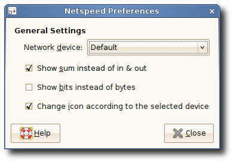
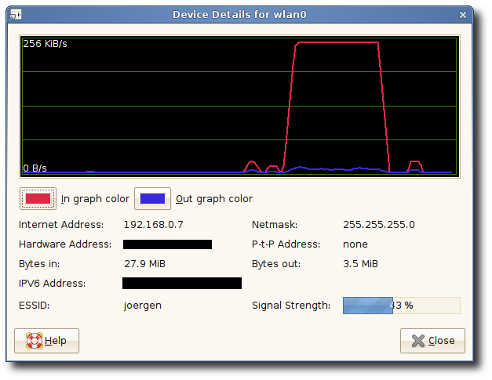

What is Netspeed?
Netspeed is just a little GNOME-applet that shows how much traffic occurs on a specified network device (for example eth0). You get the best impression of it, if you look at the screenshots below.
How does it look like?
This screenshot shows netspeed monitoring a W-Lan device.

A screenshot showing the effect of enabling the "show only sum" setting.
Netspeed in a transparent panel with context menu.
The preferences dialog.
This window shows some details on the selected network device.
Documentation & FAQ
The manual is available via the GNOME Help Browser or via the context menu of the applet.
I gathered some FAQ. Please read them before contacting me:
I installed the applet, but after starting it from the commandline, nothing happens or I get an error.
It's not possible to start the applet from the commandline - you have to use the entry in the panel menu to start the applet.I don't have a entry for the applet in the panelmenu.
First of all, you have to restart the panel before the entry will appear. Second, you have to install the applet at the same location as the rest of gnome2. (The applet-.server-file has to be located at the same place where all the other .server-files are - usually /GNOME2_PATH/lib/bonobo/servers/).Why doesn't the applet have a (dis-)connect feature?
Well, actually it has (since version 0.10). However the setup is currently not visible in the UI. To set it up, fire up gconf-editor (the applet must be running), and navigate to /apps/panel/profiles/default/applets/. Scroll through the applets until you find an entry with the bonobo_iid OAFIID:GNOME_NetspeedApplet. In the prefs subsection add (or edit the) two keys up_command and down_command. The values have to be the path to the commands you use to connect/disconnect your devices (usually /sbin/ifup and /sbin/ifdown). After that, on the commandline, execute bonobo-slay netspeed. The applet should now restart and after that left-clicking on the applet should give you a connect-dialog.Why is this feature so difficult to set up?
I originally didn't want to include this feature in the applet at all, because I think it's more or less a hack. However it has now been requested so frequently, that I thought it's almost a "must-have". But it's still a hack IMHO, so that's why it's only available via gconf ATM. If you think you know a (rather simple,) clean, distro independant way (with little ui) to implement this, I'll of course change my mind (patches are wellcome :-)).How do I get it?
The latest version of Netspeed requires GNOME (>=2.15.x) and GTK (>=2.6).
The latest release is version 0.14. Packages available are:
- Source Tarball: netspeed_applet-0.14.tar.gz
- Debian: use apt-get install netspeed
- Ubuntu: you need universe in your sources.list, to apt-get it
- Gentoo: simply emerge it
- Fedora Core 3 & 4: netspeed is part of Fedoras Extras (gnome-applet-netspeed).
- Redhat & older versions of FC: Dag Wieers provides some RPMs
- FreeBSD: Fresh Ports provides netspeed ports
Previous releases are available here.
Changes
0.14
- We now use 1000 bit = 1Mbit and 1024 bytes = 1 MiByte (thus switch to SI-Units)
- Improved performace
- Migration to gnome-doc-utils
- Fixed some small leaks
0.13
- The "layout-engine" for different panel-configurations was rewritten
- Basic IPv6 support
- Icontheme support
- "dummy*" devices are now ignored in the "search for running device" handler
- Try device with default gateway set first in the "search for running device" handler
0.12.1
- There was a problem with configure not findig pkg-config. This should be fixed now.
0.12
- Applied patches of Pedro Villavicencio Garrido: support panel-transparency and use new gtk about-dialog
Bugs & Feature Requests
Please report bugs to netspeed component of GNOME Bugzilla.